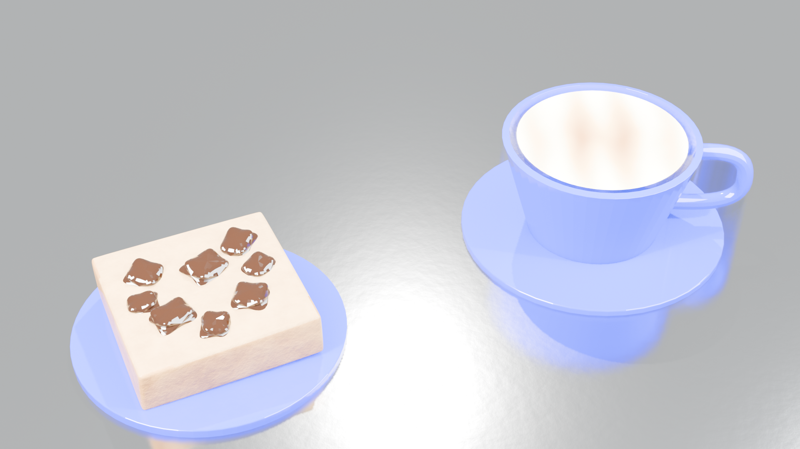

Experiencia 3D • Toca los ingredientes

Toca los puntos en la escena para ver sus ingredientes detallados
Repostería & Café
Pan de Banano Chunks & Café Latte
Precio final
$18.500 COP
Servilleta de Ingredientes
INGREDIENTES DEL PLATO
Desglose detallado de insumos y preparación artesanal
Componentes & Insumos
Alérgenos & Notas Culinarias
Servido en mesa redonda plateada & vajilla azul #0400FF
Origen & Calidad Garantizada
¿Deseas este producto en tu mesa?
Pan de Banano & Café Latte